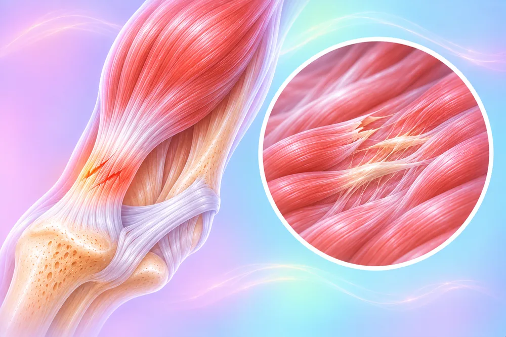

Any other bone or soft-tissue injury
19 conditions and symptoms
 Avulsion fracture (bone pulled off)
Avulsion fracture (bone pulled off)- Broken bone (fracture)
- Cracked bone
 Dislocated joint
Dislocated joint Electric shock injury
Electric shock injury- Fracture from weak bone
- Frostbite
- Greenstick fracture (partial break)
 Joint cartilage injury
Joint cartilage injury- Joint that keeps dislocating
- Lasting effects of a fracture
 Ligament injury
Ligament injury- Open fracture (bone through the skin)
 Pulled muscle
Pulled muscle- Shattered bone (comminuted fracture)
- Soft-tissue injury
- Stress fracture
 Tendon inflammation (tendinitis)
Tendon inflammation (tendinitis)- Tendon stuck to nearby tissue